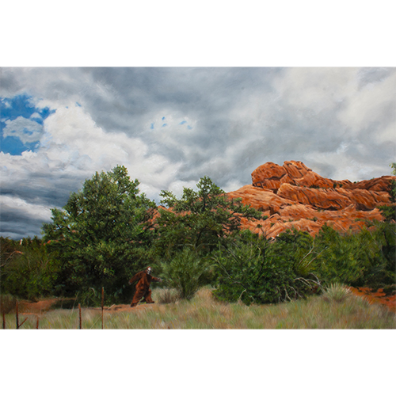
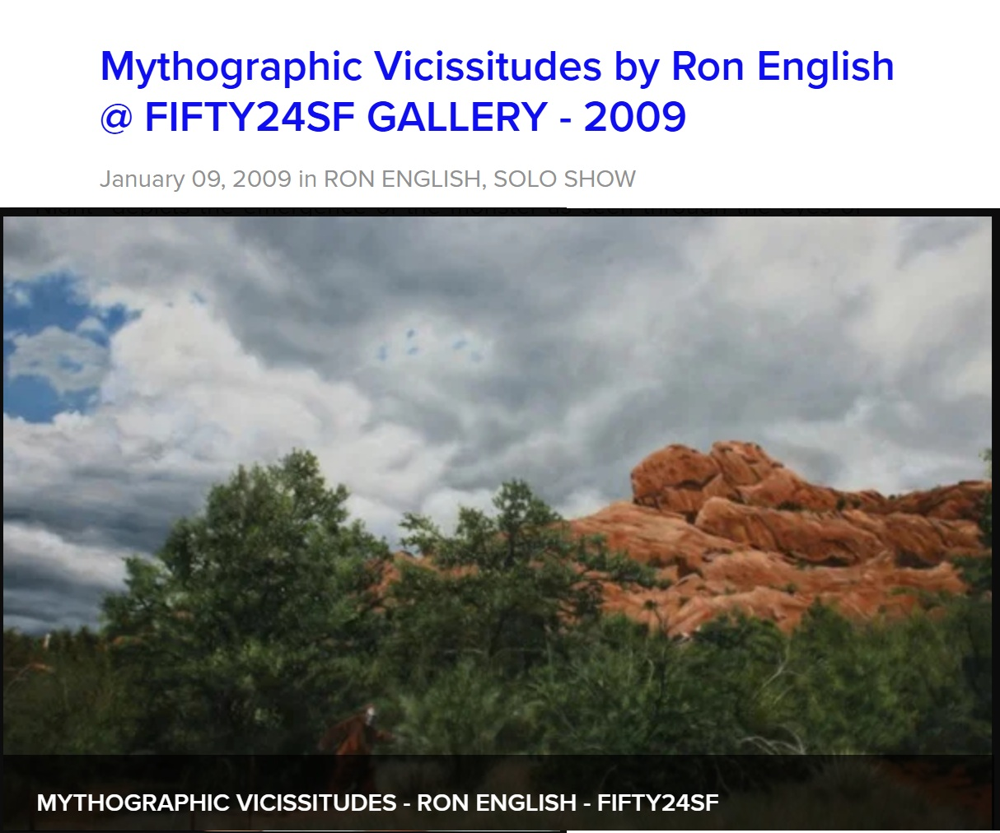

Exhibitions
Mythographic Vicissitudes, FIFTY24SF Gallery, San Francisco, California, US, January 8–29, 2009.
Notes
This work appears on FIFTY24SF’s archive page for Mythographic Vicissitudes, available here, accessed April 12, 2026.
Ancillary Documentation
